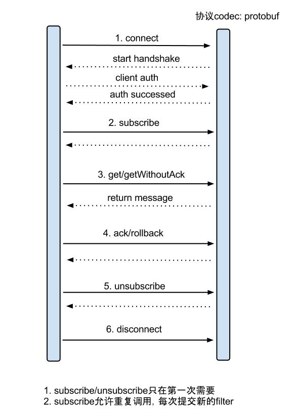
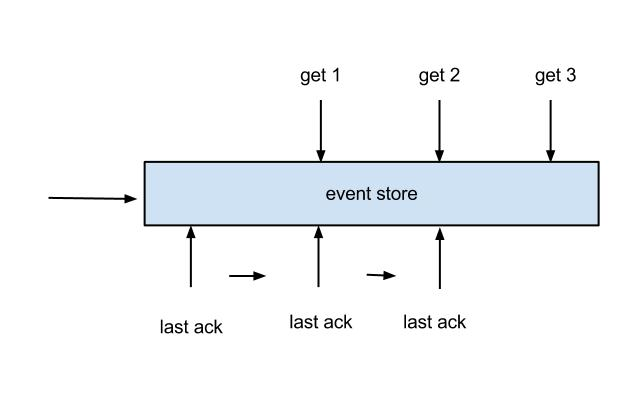
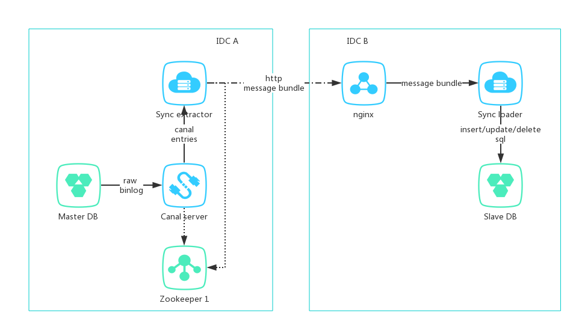

前提
MySQL数据库自带基于binlog的主从复制功能，在内网中实现数据备份、读写分离是比较容易的。但是，在跨机房环境下通过公网如此同步数据就会存在一些困难：
- 安全性：直接在公网上暴露3306端口显然存在安全性问题
- 网络稳定性：公网的网络抖动是常态，长连接难以维持
- 配置复杂：在TCP协议上一个端口只能暴露一个服务实例，在互联网出口上需要配置一堆不同的端口映射至不同的数据库服务器
- 扩展性：基于binlong的数据复制，无法实现数据过滤、转换
HTTP协议工作在TCP协议之上，使用HTTP协议同步数据，具有以下优势：
- 配置灵活：公网出口可以只暴露80端口，通过location配置反向代理可以灵活配置多个服务实例
- 安全性：基于http协议的安全配置比较容易实现
- 网络稳定性：使用http协议，可以通过批量传输加重试机制实现数据可靠传输
- 扩展性：应用层可以binlog进行过滤、转换
关键技术
有句话是这样说的：
计算机科学领域的任何问题，都可以通过增加一个间接的中间层来解决。
Any problem in computer science could be solved by another layer of indirection.
Canal就是这样的一个中间层，或者说中间件。Canal实现了MySQL数据复制协议，可以将自己“伪装”成一个slave，接收master推送过来的binlog并进行处理。
Canal原理图

binlog row模式
MySQL的数据复制模式首选ROW模式。因为SQL模式是无法保证幂等性的，比如insert语句可能会产生重复行，带查询的update语句重复执行结果可能会发生变化。在ROW模式下，binlog传输的是每一行数据的变更，包括前值和后值，应用到从库上时可以实现幂等性。当然ROW模式的缺点是一条SQL可能会产生大量的行变更，影响同步效率。
1 | [mysqld] |
数据封装
使用Canal处理binlog时，不需要了解MySQL协议的细节，可以直接面向Canal重新封装的Messsage进行编程。
Messsage是一个数据包，包含了唯一且自增的id和一组entries，entries的数量上限可以在get时通过batchSize参数指定。
Entry是Canal对binlog的封装，每个Entry包含的信息有：
- 头信息，包括schema、table、binlog file name、binlog offset、event type、execute time等
- 头信息中的EventType用于区分binlog事件类型，比如增删改、DDL等
- EntryType，有四种类型：事务开始和结束、行数据（ROWDATA）、心跳，其中ROWDATA包含了所有的数据变更，包括增删改和DDL等
- RowChange，通过解析Entry的storeValue得到，如果是增删改类型，包含了每一行数据变更的所有细节（RowData）：变更前每列值、变更后每列值；如果是SQL类型则包括原始的SQL语句
有关CanalEntry的细节可以阅读Canal源码中的ClientExample。
数据消费模型
Canal支持内嵌式和C/S模式调用。其中C/S模式需要启动独立的Server进程，应用作为Client连接Server而不是MySQL，并且使用protobuf作为数据协议。Server和Client都支持基于Zookeeper的HA，是推荐的使用方式。内嵌式是将Canal作为SDK直接使用，比较灵活但是不提供HA机制。
Server/Client交互流程

- connect 建立连接
- subscribe 开始订阅数据
- getWithoutAck 尝试获取数据且不自动ACK，其中batchSize参数可以指定数量上限，无数据时batchId为-1，此时客户端应适当休眠
- ack 处理成功，向Server发送ACK
- rollback 处理失败无法恢复，回滚消费点位
- unsubscribe 停止订阅数据
- disconnect 关闭连接
示例代码：
1 | try { |
完整的示例可以参考Canal源码中的ClientExample。
数据可靠消费机制

Canal server使用RingBuffer缓冲binlog数据。
- 当RingBuffer被填满，Canal不再接收MySQL推送的binlog数据，避免binlog洪峰冲垮server，RingBuffer末端的点位对应binlog的解析点位
- client ack之后，RingBuffer空间可以腾出接收新的数据，同时记录binlog消费点位，消费点位小于或等于解析点位
- client get和ack可以异步进行，get/ack使用两个cursor，其中ack cursor小于或等于get cursor。client可以连续get数据然后并发处理，但是ack必须串行化
并发处理binlog必须非常谨慎。如果两个不同批次的数据包中包含同一行数据的变更，那么两个变更被应用到从库的顺序会影响到数据的一致性。
binlog点位存储
Canal支持使用内存、文件、Zookeeper存储binlog消费点位，其中Zookeeper是用于生产的首选方式。
批量消费机制
在使用getWithoutAck批量消费数据时，实际到的数据量上限是batchSize * memunit。其中memunit中是server端配置的值。
比如以下配置：
1 | canal.instance.memory.buffer.size = 16384 |
此时数据单位为MEMSIZE，即字节byte，内存中的RingBuffer大小为16384 * 1024B。如果客户端代码中getWithoutAck传2，那么每次批量获取的binlog数据量是不超过或略微超过2 * 1024 B，受server配置中的canal.instance.memory.buffer.memunit和canal.instance.memory.batch.mode配置影响。
HA机制
Canal server/client HA
Canal的server/client都利用Zookeeper实现了HA机制。对于一个canal instance，同时只能有一个server和一个client在工作。如果集群中有多个server，只有一个server会正常工作，其他servers将处于挂起状态；当前工作的server挂掉之后，会有另一个server继续接替，同时client可以自动切换到新的server。Client的HA也采取类似机制。
这是由binlog的特性决定的，如果binlog被并发消费并应用到从库，数据的一致性保证是个难题。
MySQL HA
如果MySQL主库是集群式的，包括多主架构（比如Gelera cluster）和主备架构，Canal支持配置对MySQL的主备切换。多主架构下，每个MySQL节点的binlog点位往往不是相同的数值，此时可以使用timestamp而不是binlog position作为点位参数。
进一步了解Canal可以参考其Wiki。
技术实现
总体架构

- A机房部署主库、zookeeper、canal server、同步应用（extractor端in tomcat）
- B机房部署从库、nginx、同步应用（loader端in tomcat）
- extractor端作为canal client连接canal server，将binlog数据打包成message bundle通过公网post至B机房
- loader端接收通过nginx转发的请求数据，在一个事务里将message bundle里的所有数据变更应用至从库，然后向extractor返回结果
- 如果loader写入失败，或者由于网络原因导致传输失败，extractor都进行重试直到成功，loader端保证数据写入的幂等性
- canal server、extractor、loader都支持集群部署实现高可用
Extractor端
Extractor端主要是集成canal client消费canal entries，将批量获取到的entries序列化并发送到loader端。为了实现可靠复制，extractor应当对请求进行重试，由loader负责保证幂等。
Canal内部使用TCP协议和protobuf传输数据。到HTTP一层，推荐使用json作为序列化方式。比较简单的作法是将Canal entries直接toByteArray，再使用BASE64编码转为字符串形式，然后将一批entries组成json进行传输。
BASE64编码推荐使用Guava的
BaseEncoding类。
Loader端
Loader端主要实现以下功能：
- 接收数据并解析
- 使用事务保证每个数据包的处理原子性
- 在事务中，将每条RowChange应用到从库上，对每条增删改类的Canal entry构建增删改SQL并执行，对DDL类的Canal entry直接执行其SQL
RowChange处理
考虑四类常见的RowChange事件，Insert、Update、Delete和DDL。
1 | public void handle(CanalEntry.Entry entry, CanalEntry.RowChange rowChange) throws SQLException { |
Insert事件处理
对于Insert事件，要关心的数据是RowData中的后值，即afterColumnsList属性的值。例如：
1 | List<CanalEntry.Column> afterColumnsList = rowData.getAfterColumnsList(); |
带有主键参数的Insert语句是幂等的。RowData中包含所有列的值，Insert SQL应该涵盖表的所有列。需要注意的请求可能会重发，Insert语句可能因此产生键冲突而失败，因此loader必须容忍MySQLIntegrityConstraintViolationException异常。
1 | // 注意mysql-connector-java中有两个同名类，这里要catch的是 |
Insert SQL的拼接是比较简单的，直接拼接所有字段即可。
1 | private void handleInsert(CanalEntry.Entry entry, CanalEntry.RowChange rowChange) throws SQLException { |
Update事件处理
对于Update事件，需要关心的是后值中的所有被更新的列和前值中的主键列（主键可能会在Update事件中被更新）。
基于主键而且不带查询的Update语句是幂等的。
确定主键列需要使用DESC语句。可以从Entry的Header中得到schema name和table name，然后构建DESC语句。当然，表结构是可以缓存的。
Update SQL中，where子句应当是所有主键列的equals条件，set子句应当仅包含Update事件中被更新的列，列是否被更新可以用CanalEntry.Column#getUpdated方法判断。
1 | private void handleUpdate(CanalEntry.Entry entry, CanalEntry.RowChange rowChange) throws SQLException { |
Delete事件处理
对于Delete事件，需要关心的是前值中的所有主键列。使用所有主键列的equals条件构建Delete SQL即可。
基于主键的Delete语句是幂等的。
1 | private void handleDelete(CanalEntry.Entry entry, CanalEntry.RowChange rowChange) throws SQLException { |
DDL事件处理
在binlog row模式下，DDL仍然以SQL语句的形式进行同步。在loader端直接执行该SQL即可。
由于表名、列名的唯一性，对表的DDL操作（create/alter/drop等）是幂等的。
1 | private void handleSql(CanalEntry.Entry entry, CanalEntry.RowChange rowChange) throws SQLException { |
心跳监控
高可用的系统少不掉业务监控。Canal的设计为实现监控提供了便利。在Canal server配置中，可以配置心跳SQL，Canal server会定期在主库上执行心跳SQL。
心跳SQL的默认值是：
1 | insert into retl.xdual values(1,now()) on duplicate key update x=now() |
配置参数如下：
1 | canal.instance.detecting.enable = true ## 需要开启心跳检查 |
一方面，心跳SQL可以用于检测MySQL主库的可用性，进一步可以实现MySQL主库的切换。
另一方面，如果心跳表同步到从库，可以通过在从库上查询最后一次更新时间戳、并判断是否超时的方法来监控数据复制的正常与否。
对于以上心跳SQL，显然需要创建相应的库和表。
1 | create database retl; |
同时，如果需要在从库端加监控，应该在canal.instance.filter.regex配置中包含该表。
延伸
在有稳定的专线而且端口开放没有太多限制的情况下，可以考虑使用阿里另一个开源项目Otter。Otter是基于Canal实现的完整的数据同步解决方案，可以使用UI灵活配置、管理数据同步。